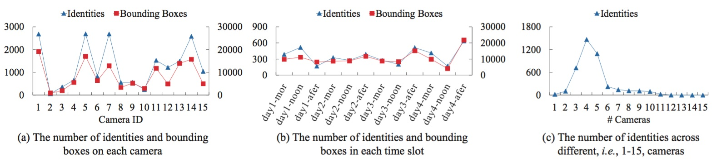

In this project page, we mainly introduce the MSMT17 dataset.
Description to MSMT17

To collect a large-scale person re-identification dataset-MSMT17, we utilize an 15-camera network deployed in campus. This camera network contains 12 outdoor cameras and 3 indoor cameras. We select 4 days with different weather conditions in a month for video collection. For each day, 3 hours of videos taken in the morning, noon, and afternoon, respectively, are selected for pedestrian detection and annotation. Our final raw video set contains 180 hours of videos, 12 outdoor cameras, 3 indoor cameras, and 12 time slots. Faster RCNN is utilized for pedestrian bounding box detection. Three labelers go through the detected bounding boxes and annotate ID label for 2 months. Finally, 126,441 bounding boxes of 4,101 identities are annotated. Some statistics on MSMT17 are shown in above. Compared with existing datasets, we summarize the new features in MSMT17 into the following aspects:
(1) Larger number of identities, bounding boxes, and cameras.
(2) Complex scenes and backgrounds.
(3) Multiple time slots result in severe lighting changes.
(4) More reliable bounding box detector.
| Dataset | MSMT17 | Duke [1] | Market [2] | CUHK03 [3] | CUHK01 [4] | VIPeR [5] | PRID [6] | CAVIAR [7] |
| BBoxes | 126,441 | 36,411 | 32,668 | 28,192 | 3,884 | 1,264 | 1,134 | 610 |
| Identities | 4,101 | 1,812 | 1,501 | 1,467 | 971 | 632 | 934 | 72 |
| Cameras | 15 | 8 | 6 | 2 | 10 | 2 | 2 | 2 |
| Detector | Faster RCNN | hand | DPM | DPM,hand | hand | hand | hand | hand |
| Scene | outdoor,indoor | outdoor | outdoor | indoor | indoor | outdoor | outdoor | indoor |
If you use this dataset in your research, please kindly cite our work as,
[1] Z. Zheng et al. Unlabeled samples generated by gan improve the person re-identification baseline in vitro. In ICCV, 2017.
[2] L. Zheng et al. Scalable person re-identification: A benchmark. In ICCV, 2015.
[3] W. Li et al. Deepreid: Deep filter 918 pairing neural network for person re-identification. In CVPR, 2014.
[4] W. Li et al. Human reidentification with transferred metric learning. In ACCV, 2012.
[5] D. Gray et al. Viewpoint invariant pedestrian recogni- tion with an ensemble of localized features. In ECCV, 2008.
[6] M. Hirzer et al. Person re-identification by descriptive and discriminative classifica- tion. In SCIA, 2011.
[7] D. S. Cheng et al. Custom pictorial structures for re-identification. In BMVC, 2011.